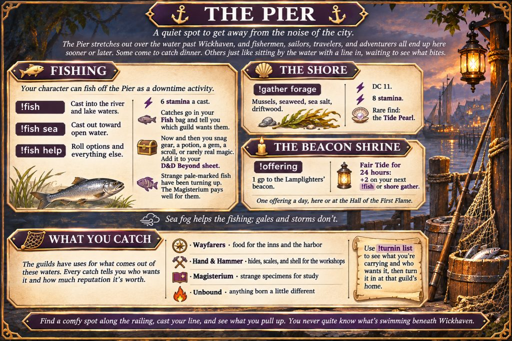

Gathering and fishing
Gathering and fishing both spend stamina, so you choose how to split your day between them.

Gathering
Use !gather farm, !gather forage, !gather trap or !gather wood in the right channel. Here's how a gather works:
- You roll the better of the spot's two skills against its DC.
- Beat the DC for 1 find, by 5 for 2 finds, by 10 (or a natural 20) for 3.
- Your tool tier, journal bonus and the weather add to the roll.
- Any success has a 3–4% chance of a rare find.
- In risky spots, a very low roll costs you HP.
- Food goes to your Ingredients bag, everything else to Materials. Every find is logged in your journal.
- It costs 8 stamina on a find and 4 on a miss. A natural 1 costs 12; a natural 20 refunds 4.
| Spot | Activities | DC | Risky? | Rare finds |
|---|---|---|---|---|
| Farmland | Farm, forage, trap | 12–13 | No | Golden Pumpkin, Silverleaf, Golden Pheasant |
| The Pier | Forage | 11 | No | Tide Pearl |
| Hunting Fields | Forage | 13–15 | Harder biomes | One per biome |
| Outlands roads | Forage, trap, wood | 13–15 | Yes | Bluelight Cap, White Stag, Heartwood |
Being drunk or carrying a full Hush puts every gather at disadvantage.
Fishing
!fish casts into river and lake water, !fish sea toward open water. Each cast costs 6 stamina. Catches go in your Fish bag and tell you which guild wants them. Some casts snag gear, a potion, a gem, a scroll, or rarely a magic item instead. Your fishing rod, journal, the weather and the Fair Tide blessing all add to the roll. Watch for Pale-Marked Fish; the Magisterium pays well for them (and see Rumors & mysteries).
Sea fog helps the fishing; gales and storms don't. See Weather. Make an !offering at the Beacon Shrine first for Fair Tide: +2 on your next cast or shore gather.
Who wants your catch
Wayfarers
Food for the inns and the harbor
Hand & Hammer
Hides, scales and shell for the workshops
Magisterium
Strange specimens for study
Unbound
Anything born a little different
!turnin list shows what you're carrying and who wants it. Turn it in at that guild's home.